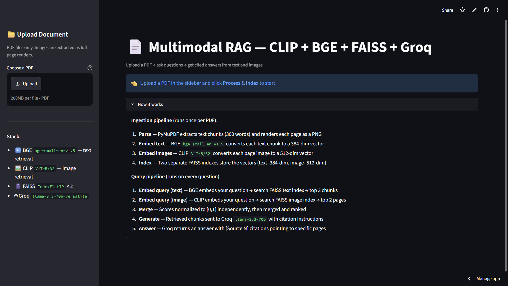
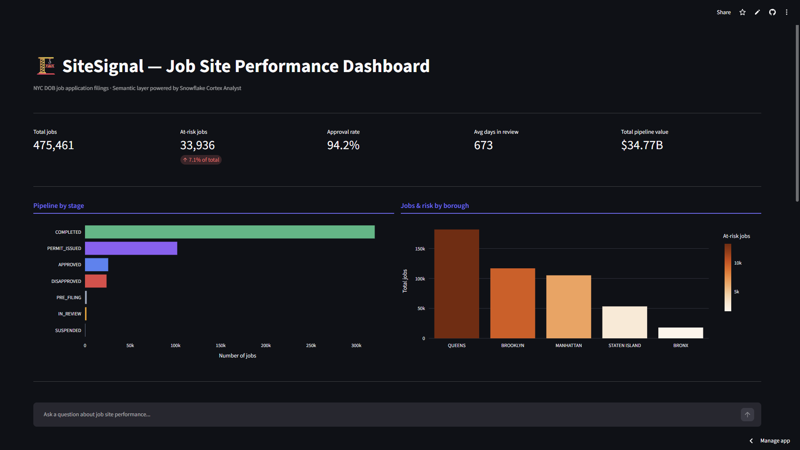
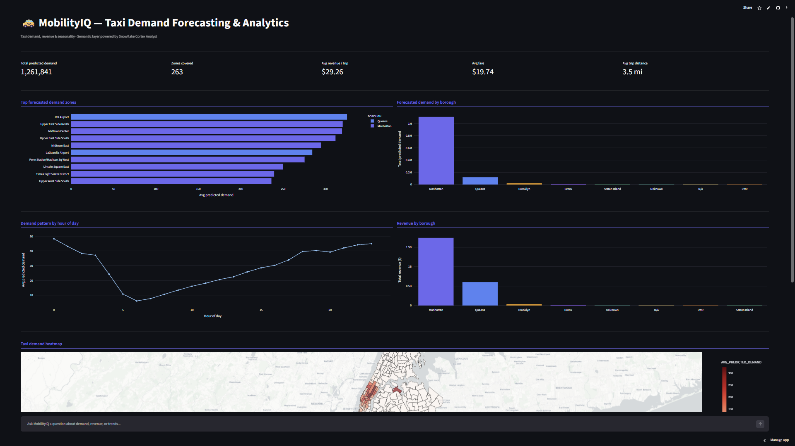

Mukul Sagvekar
// data engineer · 4+ years experience
Building scalable pipelines, semantic layers and RAG systems that make data reliable, queryable in plain English and genuinely useful to the teams who depend on it.
01 / Background
About me
M.S. Data Analytics with 4+ years engineering the full data lifecycle — from schema design and ingestion strategy through transformation, modeling, and self-serve delivery.
My core stack is Snowflake, dbt, Airflow, AWS and GCP. I build pipelines reliable enough to trust at scale: medallion-architecture warehouses, SCD Type 2 tracking and ELT processing 330M+ records/month.
Beyond infrastructure, I specialize in making data accessible. I design YAML semantic layers — defining dimensions, metrics and verified queries so business users can query Snowflake in plain English through a Cortex Analyst NL-to-SQL interface, removing the analyst bottleneck entirely.
Most recently I've extended into AI: building a multimodal RAG pipeline with dual FAISS indexes (BGE for text, CLIP for images) that retrieves across both modalities and generates cited answers via Groq's LLaMA with zero ingestion API cost.
02 / Work
Data projects

01
Multimodal RAG
Python · Streamlit · CLIP · BGE · FAISS · Groq
Upload a PDF and ask questions — dual FAISS indexes (BGE for text, CLIP for images) retrieve across both modalities with score normalization. Groq's llama-3.3-70b generates answers with inline citations and page thumbnails. 25-page doc indexes in under 45 seconds at zero ingestion API cost.

02
SiteSignal
Snowflake · dbt · Cortex Analyst · Streamlit · SQL · Python
End-to-end pipeline on Snowflake transforming NYC construction permit filings into operational insights via medallion architecture. A YAML semantic model over 475K+ jobs powers a Cortex Analyst NL-to-SQL interface — users ask questions in plain English, analysts get instant governed answers.

03
MobilityIQ
AWS Lambda · S3 · Snowflake · dbt · LightGBM · Streamlit
Forecasting platform predicting hourly taxi demand across 263 NYC zones over a 7-day horizon. LightGBM trained on 4.4M+ records. A governed Cortex Analyst semantic model with verified queries enables natural-language analytics on demand, revenue, and seasonality — no SQL required.

04
NYC Taxi Data Analysis
AWS Lambda · S3 · Snowflake · dbt · Tableau · SQL · Python
Snowflake schema data model and end-to-end pipeline analyzing 3.1M NYC taxi trips. Delivered Tableau dashboards covering trip demand and fare insights across time and geography.
03 / Career
Professional experience
Data Engineer
Happiest Minds · Pune, India
Built ELT pipelines using Confluent Kafka, AWS S3 and Snowflake across retail and digital engagement domains, consolidating 8+ sources into dimensional models and achieving near-zero pipeline failures with Airflow orchestration. Automated GA4-based customer journey reports using BigQuery and Cloud Functions and implemented RBAC and data governance across Snowflake environments.
Data Engineer
Accenture · Pune, India
Led migration of a legacy data system from AWS to Snowflake. Architected large-scale ELT pipelines processing 330M+ records/month using Medallion Architecture, implemented SCD Type 2 for historical audience tracking and built a Jenkins CI/CD pipeline for efficient large-file ingestion.
04 / Beyond work
Activities & community

Apr 2025 – Present
Facility Lead — Campus Recreation Center
Oversee daily operations, assist students, faculty, and staff, and manage event bookings for the university recreation center.

Sept 2025
2025 UIS Prairie Stars 5K
Completed with a personal best of 26:27, finishing 3rd in my age category.

Feb 2019
MITWPU Aarohan Cultural Fest
Core organizing member leading the sponsorship and publicity teams for the college cultural festival.

Jan 2018
MITWPU Run For A Cause Marathon
Organized and coordinated a marathon that drew 700+ participants.
05 / Let's talk
Contact & connect
Let's build something reliable together.
Actively seeking data engineering roles and open to conversations about pipelines, semantic layers, RAG systems, and anything in between.